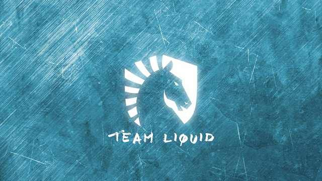

Counter Strike ALL team
Cloud9
Originally acquired from compLexity Gaming, Cloud9's core Counter-Strike squad formerly consisted of most of the players originally of the compLexity team, which included shroud, SEMPHIS, Hiko, n0thing, and sgares. Jack Etienne, the owner of Cloud9, stated that he caught glimpse of the CS:GO scene at EMS One: Katowice 2014 and knew he wanted to hold a CS:GO team after seeing that event and eventually took up the opportunity to sign the former compLexity players, who placed in the 5-8 slot at the major. In 2018, Cloud9 went on an incredible underdog journey at ELEAGUE Boston 2018, becoming the first (and currently only) North American team to win a major championship.
ESL One: Cologne 2014
At ESL One: Cologne 2014, Cloud9 were placed in Group D, alongside Team Dignitas, Titan, and Australian fan favorites, Vox Eminor. Cloud9's opening match of the tournament was against the French side Titan on Dust II. The halftime score looked like there was no way back for Cloud9, after being 4:11 down. Amazingly, the Americans matched the same score as Titan and took the team to overtime. In overtime, Cloud9 clinched victory, by winning the second overtime with a final scoreline of 22-18. The group winners match was against Team Dignitas on Mirage. This game is now famous for Hiko's insane play during Cloud9's comeback on the CT side against the Danes, which caused caster Anders Blume to say his now famous catch phrase "Hiko are you kidding me?". With a final score of 16-14, the team had won their group for the second time at a Major, after having done so at DreamHack Winter 2013 the previous year. In the quarter-finals, their opponents were Swedish team Ninjas in Pyjamas. They would face off on a gripping three map series, on Nuke, Dust II and Cobblestone. Cloud9 won the first map on Nuke 16-8, in what was considered to be an upset score by many fans, as NiP was known at the time for their dominance on the map. Now in the second game, strong performances from Xizt and shroud kept the game neck and neck, but in the end the Ninjas prevailed, and won the map 16-14. Momentum now on their side, NiP ultimately powered through to winning the series, after another close match, with again a final score of 14-16. Ninjas in Pyjamas went on to win the Major against Fnatic in the grand finals.
Team Liquid
On January 13th 2015, Team Liquid made their foray into CS:GO by signing the ex-Denial eSports lineup of Damian "daps" Steele, Keith "NAF" Markovic, Eric "adreN" Hoag, Nicholas "nitr0" Canella and Jacob "FugLy" Medina with compLexity Gaming veteran Matt "Warden" Dickens as their coach. The first tournament the team attended was MLG X Games Aspen Invitational where they replaced the recently banned iBUYPOWER. The team would finish 5th-6th with their only win being against Counter Logic Gaming in the Group Stage. The team competed at Clutch Con 2015 afterwards making their first Semi-Final appearance losing to eventual winners Fnatic. Despite placing relatively well in North American tournaments they were yet to crack the international scene with last place finishes at the FACEIT League 2015 Stage 1 Finals and the Gfinity Spring Masters 2. After several changes including Warden being dropped as Coach, ex-eLevate player Johnathan "EliGE" Jablonowski replacing NAF and the addition of former Nihilum Gaming player Kyle "flowsicK" Mendez replacing daps later on, Donald "dmode" Cahill would also be brought in as their new coach. With flowsicK the team finally made it past the Group Stages in their first international S-Tier event, the Electronic Sports World Cup 2015. This success was short-lived as they placed last at both CEVO Season 7 Professional and the FACEIT 2015 Stage 2 Finals. The team also failed to qualify for the ESL One Katowice and Cologne majors. After a period of inactivity from the big tournaments, Spencer "Hiko" Martin was eventually signed to Team Liquid replacing flowsicK on September 3rd, dmode was also replaced by James "GBJame^s" O'Connor.
First Major and more mixed results
With strong performances from EliGE and Hiko the team beat Renegades in two best-of-threes at DreamHack Stockholm 2015, which qualified them for their first major, Cluj-Napoca. However, the team did quite poor at the major finishing last place in their group with losses to Virtus.pro and Ninjas in Pyjamas. As 2016 began the team continued to truly excel domestically but ultimately still struggled at international events. During the brief player break, Team Liquid tried out former Ninjas in Pyjamas AWPer, Aleski "allu" Jalli, but was unsuccessful in signing him. They later signed the European superstar, Oleksandr "s1mple" Kostyliev in FugLy's place. With another change a month later the team swapped adreN with Enemy's AWPer Kenneth "koosta" Suen when their players' contracts expired with his former organization. However, due to some complications adreN would still play for the team at the upcoming MLG Colombus major which they successfully qualified for after beating HellRaisers in the decider match.